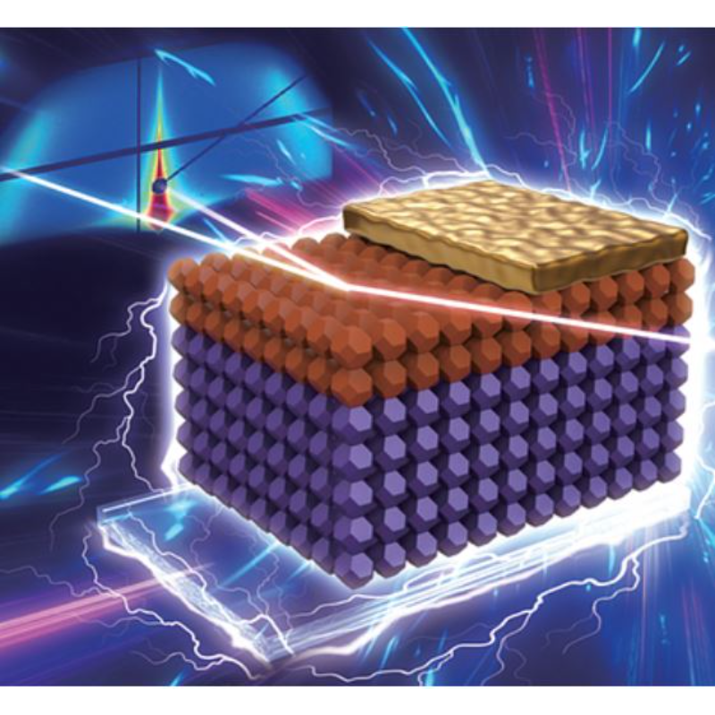
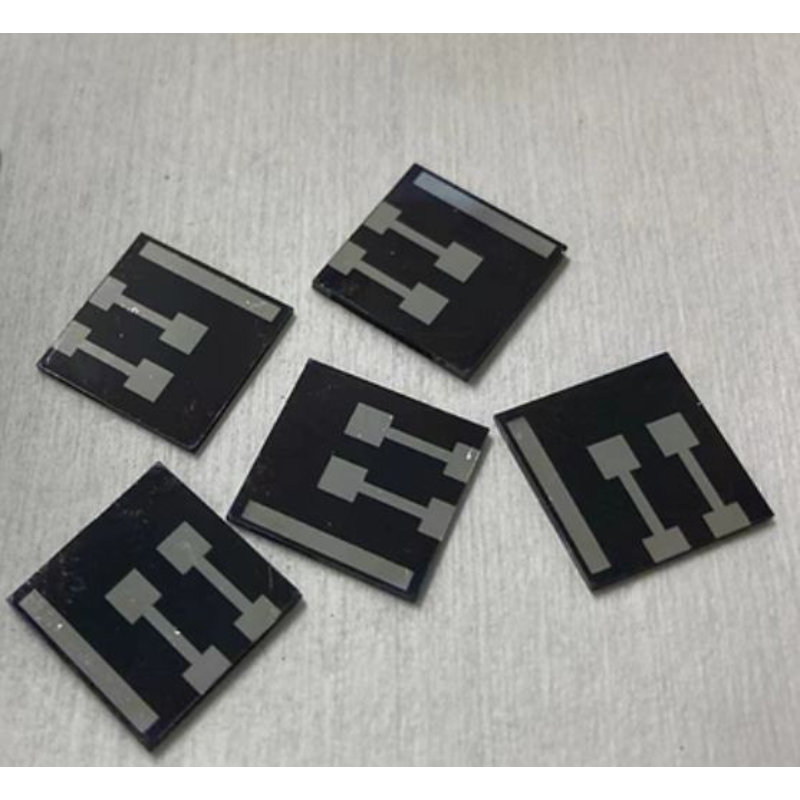
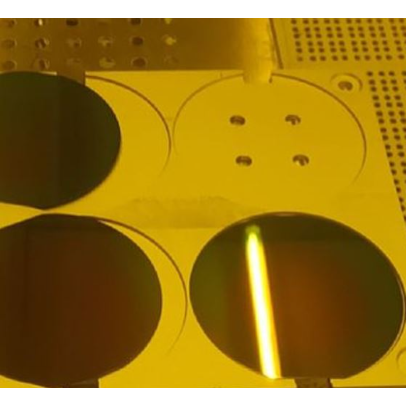

Research
Nanostructure-Performance Correlations
Investigate structure formation and degradation kinetics in solution-processed semiconductor thin films (SPSFs) using grazing-incidence X-ray scattering (GIXS: GISAXS, GIWAXS).

Novel Optoelectronic Devices
Design and fabricate novel optoelectronic devices based on solution-processed semiconductor thin films.

Optoelectronic Chip Integration
Develop integrated applications of SPSFs using integrated circuit (IC) and microelectromechanical systems (MEMS) technologies.
